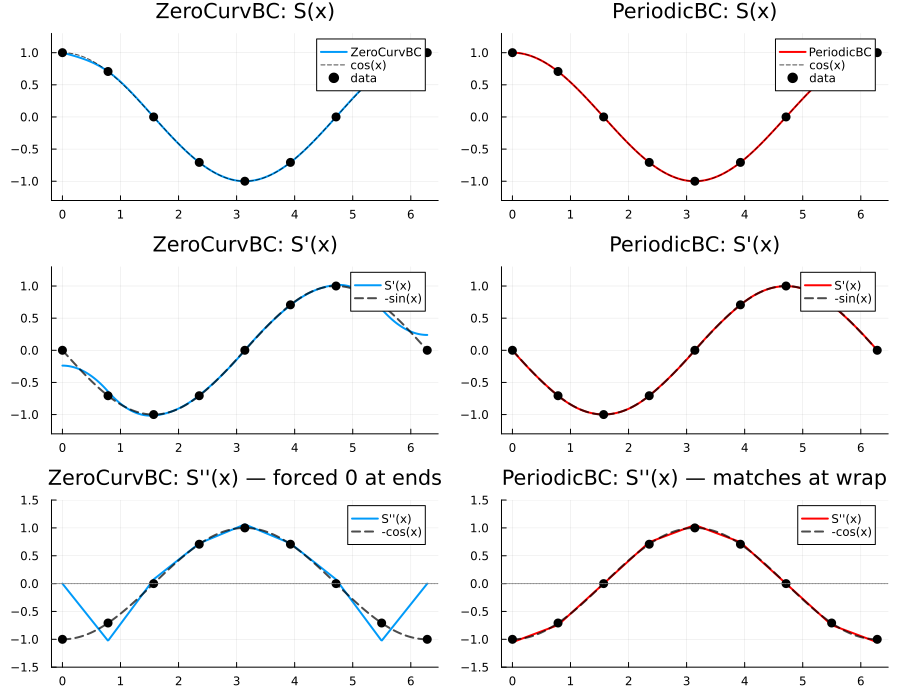

Cubic Spline Interpolation
C²-continuous spline interpolation with smooth first and second derivatives.
Two Fundamental BC Categories
Cubic splines require boundary conditions at both endpoints. There are two fundamentally different approaches:
| Category | Algorithm | Mathematical Meaning |
|---|---|---|
| BCPair | Standard tridiagonal | Independent constraints at each endpoint |
| PeriodicBC | Sherman-Morrison cyclic | True periodic: $S(x) = S(x+\tau)$ with C² continuity |
👉 See Boundary Conditions Overview for the complete BC type hierarchy and detailed explanations.
1. BCPair: Independent Endpoint Constraints
Each endpoint has its own PointBC constraint — either first or second derivative:
BCPair(left::PointBC, right::PointBC)
# PointBC types:
Deriv1(v) # S'(endpoint) = v (slope)
Deriv2(v) # S''(endpoint) = v (curvature)Examples:
BCPair(Deriv2(0), Deriv2(0)) # ZeroCurv: zero curvature at both ends
BCPair(Deriv1(0), Deriv1(0)) # ZeroSlope: zero slope at both ends
BCPair(Deriv1(1.0), Deriv2(0)) # Mixed: slope=1 at left, curvature=0 at right
BCPair(Deriv2(-2.0), Deriv1(0.5)) # Mixed: curvature=-2 at left, slope=0.5 at rightConvenience shortcuts:
| Shortcut | Equivalent | Meaning |
|---|---|---|
ZeroCurvBC() | BCPair(Deriv2(0), Deriv2(0)) | S''=0 at both ends |
ZeroSlopeBC() | BCPair(Deriv1(0), Deriv1(0)) | S'=0 at both ends (flat) |
2. PeriodicBC: True Periodic C² Continuity
The spline satisfies periodicity with period $\tau = x_n - x_0$:
\[S(x) = S(x + \tau), \quad S'(x) = S'(x + \tau), \quad S''(x) = S''(x + \tau)\]
# Inclusive endpoint (default): y[1] ≈ y[end] required
PeriodicBC()
# Exclusive endpoint: no redundant last point (e.g., FFT grids)
PeriodicBC(endpoint=:exclusive) # Range grid → period auto-inferred
PeriodicBC(endpoint=:exclusive, period=2π) # any grid → explicit periodFor inclusive endpoints, your data must satisfy y[1] ≈ y[end]. For exclusive endpoints, the data is extended internally — no manual duplication needed.
PeriodicBC uses the Sherman-Morrison formula to solve a cyclic tridiagonal system. This is fundamentally different from BCPair's standard tridiagonal solver.
👉 See PeriodicBC Details for endpoint conventions, period inference, and comparison with WrapExtrap().
Usage
using FastInterpolations
x = range(0.0, 2π, 15)
y = cos.(x)
# One-shot evaluation (default: CubicFit)
cubic_interp(x, y, 1.0)
cubic_interp(x, y, 1.0; bc=ZeroCurvBC()) # zero curvature at endpoints
cubic_interp(x, y, 1.0; bc=ZeroSlopeBC()) # flat endpoints
cubic_interp(x, y, 1.0; bc=BCPair(Deriv1(1), Deriv2(0))) # custom
# Periodic (closed curve) - requires y[1] ≈ y[end]
cubic_interp(x, y, 1.0; bc=PeriodicBC())
# In-place evaluation (zero allocation)
xq = range(x[1], x[end], 200)
out = similar(xq)
cubic_interp!(out, x, y, xq)
# Create reusable interpolant
itp = cubic_interp(x, y) # CubicFit (default)
itp(1.0) # evaluate at single point
itp(xq) # evaluate at multiple points
# Derivatives
cubic_interp(x, y, 1.0; deriv=DerivOp(1)) # continuous first derivative
d1 = deriv1(itp); d1(1.0) # same via interpolant
d2 = deriv2(itp); d2(1.0) # continuous second derivativeWhen to Use Each BC
| Situation | Recommended BC |
|---|---|
| General data, unknown endpoint behavior | CubicFit() (default) |
| Endpoints should be flat (zero slope) | ZeroSlopeBC() |
| Known endpoint derivatives (physics) | BCPair(Deriv1(...), Deriv1(...)) |
| Cyclic data (angles, phases, time-of-day) | PeriodicBC() |
Visual Comparison: ZeroCurvBC vs PeriodicBC
Comparing cos(x) interpolation — note that cos''(x) = -cos(x) ≠ 0 at endpoints:
using FastInterpolations
# Uniform grid (9 points)
x = range(0, 2π, 9)
y = cos.(x)
xq = range(0, 2π, 500)
itp_zerocurv = cubic_interp(x, y; bc=ZeroCurvBC())
itp_periodic = cubic_interp(x, y; bc=PeriodicBC())
# Compare: S(x), S'(x), S''(x) for both BCs
d1_nat, d2_nat = deriv1(itp_zerocurv), deriv2(itp_zerocurv)
d1_per, d2_per = deriv1(itp_periodic), deriv2(itp_periodic)